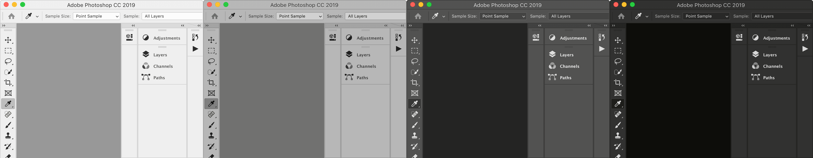
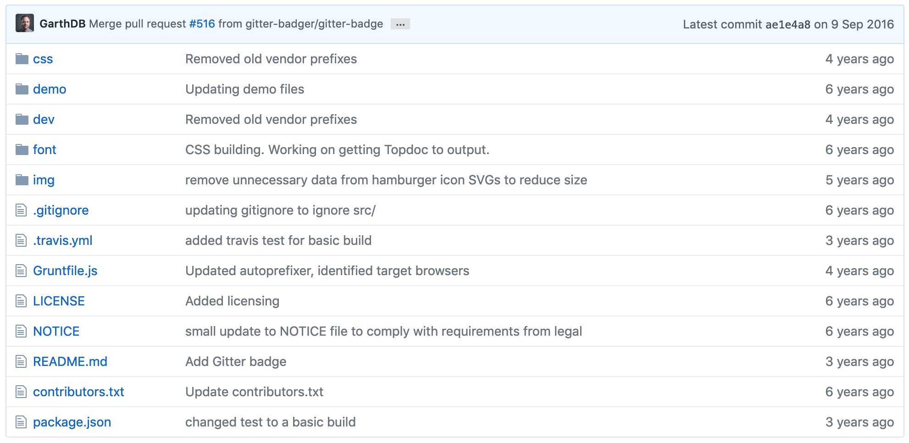

When building CEP Panels, most of the times you aim at a look & feel that blends in with the CC host application, so that your product is not visually distracting. Because the panels' structure is made of HTML, the appearance is defined with nothing but CSS, with a little help from JavaScript when needed.
Very much like any other web page, there is no pre-defined style provided by default in CEP; it is also a best practice to support at least two of the UI brightnesses available in most CC Applications – that is to say, to provide a Dark and a Light theme. Ideally, you may want to have four of them, to match closely all the available themes in, say, Photoshop or InDesign.

Unless you have plenty of time and the skills to build your own stylesheets from scratch, it is generally considered wiser to pick one from the CSS Frameworks available. In this two articles mini-series I'm going to explore pros and cons of two solid options: Topcoat and Spectrum.
Initially sponsored by Adobe in 2013, Topcoat is a neat project by Garth Braithwaite et al. that "[...] evolved from the Adobe design language developed for Brackets, Edge Reflow, and feedback from the PhoneGap app developer community". The GitHub repository's latest commit in the css folder is from 4 years ago1, hence it is safe to say that – optimistically – it is in a frozen state. Nonetheless, CSS are particularly resilient and won't break with time as easily as fancy JS Frameworks.

Topcoat comes with four themes (two sizes times two brighnesses), only two of which are of some interest from the CEP Panels' point of view:
You can safely forget about the "mobile" versions: their components are too large to be used in Panels, while "desktop" is spot-on.
topcoat-desktop-dark.css <—topcoat-desktop-light.css <—topcoat-mobile-dark.csstopcoat-mobile-light.cssThe list of officially supported component includes: Button Bar, Large Button Bar, Button, Quiet Button, Large Button, Large Quiet Button, Call To Action Button, Large Call To Action Button, Checkbox, Icon Button, Quiet Icon Button, Large Icon Button, Large Quiet Icon Button, Notification, Radio Button, Range, Search Input, Large Search Input, Switch, Tab Bar, Text input, Large Text Input, Textarea, Large Textarea.
A visual representation of some of them is as follows:
As you may have noticed, some useful UI elements are missing but in theory (more on that later) they can be compiled into the .css file from the source.
Topcoat also provides a set of 89 Icomatic open-source font icons2.
All combined, the result is visually nice and balanced – this is a demo panel that I've built for my HTML Panels Development course.
Visit to the Topcoat GitHub repository and download the latest release (direct link to the latest 0.8 version here). You must copy in your CEP project the two .css files mentioned above, plus the entire font folder, the img folder with just hamburger_*.svg and search_*.svg – you can delete all the rest.
Topcoat is Plug & Play, so to speak. Each component is purely defined with CSS, no JavaScript involved: as a consequence, it is enough to link the proper CSS in the header, and you're ready to go.
<head>
<meta charset="utf-8">
<link rel="stylesheet" href="css/topcoat-desktop-dark.css"/>
<title>CSS Styling with Topcoat</title>
</head>For the icons, you must download (or clone) the topcoat/icons repository, and copy all the icomatic.* files from the font folder to your CEP icons folder. Then, in index.html:
<head>
<!-- ... -->
<link rel='stylesheet' type='text/css' href='icomatic.css'>
<!-- Include the script for fallback support -->
<script type='text/javascript' src='icomatic.js'></script>
<!-- ... -->
</head>
<body>
<!-- ... -->
<span class='icomatic' style='color:blue'>alert</span>
<!-- ... -->
</body> The color style property is optional: when not specified, the icon will inherit the font color.
To keep in sync with the current application theme when the user happens to switch it – i.e. load the light or dark css at runtime – you must put in place some kind of Event-based system that listens to the UI Theme change and reacts accordingly. I assume that you know what I'm talking about, but for starters this is usually implemented assigning an id to the Topcoat css file in the <head>, and changing the href via JavaScript.
<head>
<meta charset="utf-8">
<link id="hostStyle" rel="stylesheet" href="css/styles.css"/>
<link id="theme" rel="stylesheet" href=""/>
<title>CSS Styling with Topcoat</title>
</head>
<body>
<!-- All the Panel's markup here ... -->
<!-- Script tags -->
<script src="js/CSInterface.js"></script>
<script src="js/themeManager.js"></script>
<script src="js/main.js"></script>
</body>First, there's a stylesheet with id of "hostStyle" that contains global styles for the Panel; then, there's the stylesheet with id of "theme", which has an empty href property: the one that we'll fill in JavaScript.
There are three <script> tags: the first is for the main CSInterface.js library, that needs to be loaded first; themeManager.js is in charge of the theming, and finally main.js acts as the controller. Usually, I write the themeManager.js as a IIFE (Immediately Invoked Function Expression) assigned to a variable, returning an object with one init() method:
var themeManager = (function () {
// ...
function init() {
//...
}
return {
init: init
};
}());That in turn is called in main.js this way:
themeManager.init();Please note that loading themeManager.js before main.js implies that main.js knows about the themeManager variable and is able to call its init() method.
There are several ways to implement themeManager. The general idea is that init(), called when the panel initializes itself, gets the current Host Application state via the appSkinInfo object – in other words: tries to know whether the Photoshop's UI is Dark-Gray, Light-Gray, etc.
Then, it updates the stylesheet based on that information, loading the Light or Dark version of the Topcoat .css file. Eventually, it sets an Event Listener that listens for every subsequent Theme change, and performs the stylesheet update again, when needed. The simplest themeManager.js that I can think of is as follows:
var themeManager = (function () {
'use strict';
var csInterface = new CSInterface();
// Update the theme with the AppSkinInfo
// retrieved from the host product.
function updateThemeWithAppSkinInfo(appSkinInfo) {
var sentinelColor = appSkinInfo.panelBackgroundColor.color.red;
var themeIsLight = sentinelColor > 128;
if (themeIsLight) {
document.getElementById("theme").href = "css/topcoat-desktop-light.css";
} else {
document.getElementById("theme").href = "css/topcoat-desktop-dark.css";
}
}
function onAppThemeColorChanged(event) {
var appSkinInfo = csInterface.getHostEnvironment().appSkinInfo;
updateThemeWithAppSkinInfo(appSkinInfo);
}
function init() {
var appSkinInfo = csInterface.getHostEnvironment().appSkinInfo;
updateThemeWithAppSkinInfo(appSkinInfo);
csInterface.addEventListener(CSInterface.THEME_COLOR_CHANGED_EVENT, onAppThemeColorChanged);
}
return {
init: init
};
}());
The appSkinInfo variable stores the Application state (line 26), retrieved via the getHostEnvironment() method. This very bit of information is passed (line 27) as the parameter to the updateThemeWithAppSkinInfo() function (line 7), that in turn uses the red channel of the panelBackgroundColor object to determine whether the Theme is dark or light (lines 9-10) – being the UI gray, all red, green and blue values are equal. The Theme is assessed as Light if red is greater than the middle-gray value, i.e., 128: this information is conveniently stored in the themeIsLight variable.
In the following conditional (lines 12-16), the href property of the stylesheet with id equal to "theme" is assigned with the proper .css file, either topcoat-desktop-light or topcoat-desktop-dark.
Eventually, back in init() (line 28), an Event Listener for the THEME_COLOR_CHANGED_EVENT is set so that when the user changes the theme while the panel is open, the entire process will be performed again.
If you feel like Topcoat doesn't suit all of your needs out-of-the-box, there's always the possibility to customize it.
For instance, for reasons unknown, by default the Topcoat's color property of the body is always #000 in both Dark and Light themes – i.e. the Font is always pitch black. With the insertRule() helper function, it's possible to add a CSS rule and override the default stylesheet.
function insertRule(stylesheetId, selector, rule) {
var stylesheet = document.getElementById(stylesheetId);
if (stylesheet) {
stylesheet = stylesheet.sheet;
stylesheet.insertRule(selector + ' { ' + rule + ' }', stylesheet.cssRules.length);
}
}
// ...
function updateThemeWithAppSkinInfo(appSkinInfo) {
var sentinelColor = appSkinInfo.panelBackgroundColor.color.red;
var themeIsLight = sentinelColor > 128;
if (themeIsLight) {
document.getElementById("theme").href = "css/topcoat-desktop-light.css";
} else {
document.getElementById("theme").href = "css/topcoat-desktop-dark.css";
}
insertRule(styleId, "body", "color:" + "#" + ((themeIsLight) ? "333" : "DDD") );
}
You can also match the panel background more closely, overriding Topcoat's two options (#4b4d4e and #dfe2e2) with the exact values of each one of the four UI Themes. Thanks to the following utility function that converts the color object into a hex value:
function toHex(color) {
function computeValue(rgb) {
var hex = Number(rgb).toString(16);
if (hex.length < 2) { hex = "0" + hex }
return hex;
};
var hex = "";
if (color) {
hex = computeValue(color.red) +
computeValue(color.green) +
computeValue(color.blue);
}
return hex;
}You can then:
// ...
insertRule(styleId,
"body",
"background-color:" +
"#" + toHex(appSkinInfo.panelBackgroundColor.color)
);At least in Photoshop CC 2019 (values may vary depending on the Host Application and Application version), for each one of the four themes the background is: (50,50,50), (83,83,83), (184,184,184) and (250,250,250), that in turn correspond to #323232, #535353, #B8B8B8 and #FAFAFA.
Generally speaking, if you need to find the exact Theme in use, don't aim to the exact values (they are known to slightly change over versions) but check against broad ranges, e.g.:
var sentinelColor = appSkinInfo.panelBackgroundColor.color.red;
if (sentinelColor > 200) {
// Lightest
} else if (sentinelColor > 180) {
// Light
} else if (sentinelColor > 80) {
// Dark
} else if (sentinelColor >= 50) {
// Darkest
}In the past, I've ventured into compiling Topcoat from the source – the authors' how-to is found in this video Why would one do that? For instance, to create four themes instead of the default two, to change accent color, or to implement components that have not made it in the release version.
I had some success in the past: for instance, I did insert the <select> stylesheet, which is missing in the release build. Alas, the compilation keeps failing on my system, for reasons I cannot debug. It is a Grunt task, that gives me errors on @import statements (among the rest); I have tried upgrading the dependencies, downgrading the node version, setting absolute paths, without success – it's a rabbit hole.
Back then, few years ago when it worked as expected, it was really satisfying, but for the time being it looks like we have to use Topcoat as is.
I've been using Topcoat in my project for many years now: it's my CSS Framework of choice, and I've built a lot of CEP Panels with it.
:focus border and zeroing the outline to remove the annoying blue halo around in-focus elements, etc).<select>) are missing: some workarounds are found, though, for instance for Toggle Buttons.All things considered, Topcoat is a solid choice as a CSS framework for CEP projects that I would recommend. In the next article, I'll cover the Spectrum CSS, another Adobe sponsored project that has very recently open-sourced.
Davide Barranca is the author of several Adobe development books: Adobe Photoshop HTML Panels Development and The Ultimate Guide on Native Installers and Automated Build Systems on CEP Panels, and Professional Photoshop Scripting. He blogs about panels and script development on his homepage, davidebarranca.com.